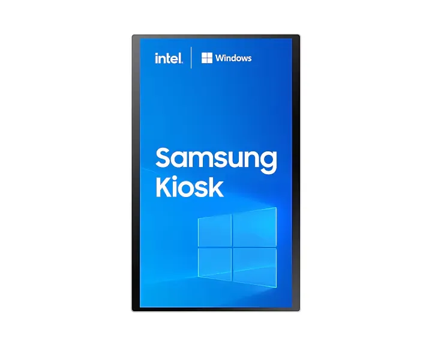

Samsung
Samsung Smart Signage KM24C-3
Kiosk
Samsung Smart Signage KM24C-3 adalah Samsung Kiosk KMC Series berukuran 24 inci berbasis Windows dengan resolusi 1.920 x 1.080 dan brightness 250 cd (Typ. w/o glass).
Cocok untuk: kiosk pemesanan mandiri (self-order) di restoran, mesin antrean atau check-in mandiri, dan layar informasi layanan di loket.
- Garansi resmi Samsung
- Kirim ke seluruh Indonesia
- Instalasi & setting konten bisa dikonsultasikan
Spesifikasi
| Model | KM24C-3 |
|---|---|
| Ukuran | 24 inch |
| Brightness | 250 nit (Typ.) |
| Ukuran Diagonal | 24" |
| Tipe Panel | ADS |
| Resolusi | 1.920 x 1.080 |
| Pixel Pitch (HxV) | 0.2745 x 0.2745 mm |
| Rasio Kontras | 1000:1 (without glass) |
| Sudut Pandang (H/V) | 178/178 |
| Waktu Respons | 14 ms |
| Color Gamut | 72% |
| Glass Haze | 25% (w/o glass) |
| H-Scanning Frequency | 56 ~ 84.5 KHz |
| Maximum Pixel Frequency | 148.5 MHz |
| V-Scanning Frequency | 48~75 KHz |
| Waktu Operasi | 16/7 |
Spesifikasi mengacu pada data distributor/pabrikan. Dapat berbeda antar varian. Konfirmasi detail melalui konsultasi.